Rotation Nine: Arduino
In this rotation, we had to complete numerous projects involving electronics using a hardware platform called Arduino. Below you will
find pictures of all the completed projects and a description of what they do.
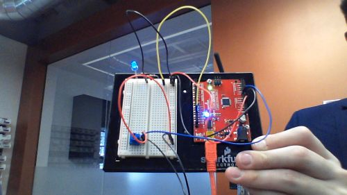 Image 1: A circuit that makes the LED glow at different intensities depending on the dial.
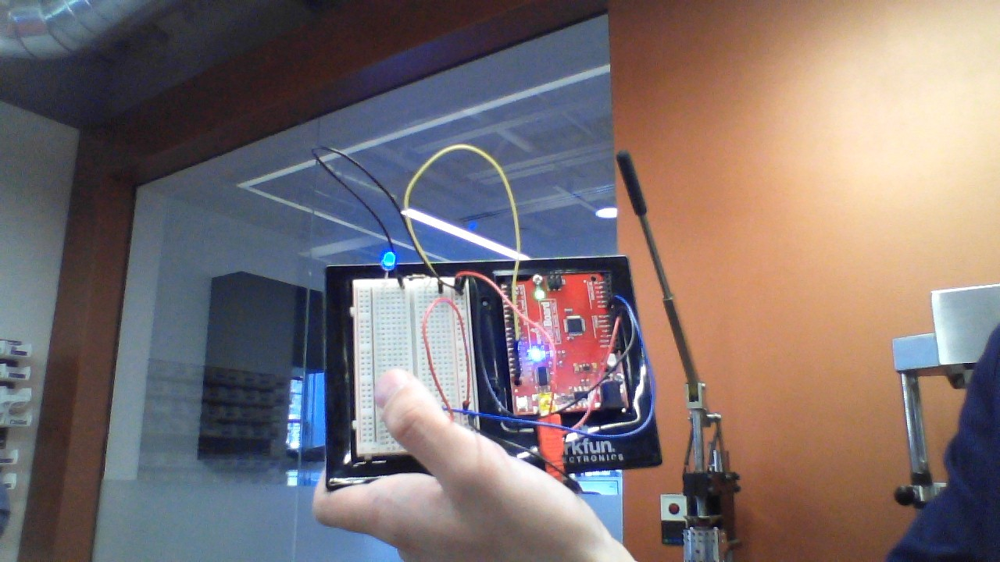 Image 2: A circuit that makes the LED glow if a finger is placed on the touch-sensitive piece.
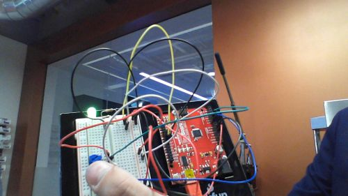 Image 3: A circuit that makes an LED change color depending on the dial and only glows with a finger touching it.
 Image 4: A circuit that plays a short tune.
Image 4: A circuit that plays a short tune.
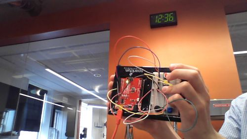 Image 5: A circuit with buttons that allows you to play musical notes.
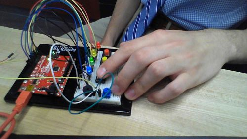 Image 6: A circuit that lets you play a game where you have to press the correct button that correlates with the flashing light.
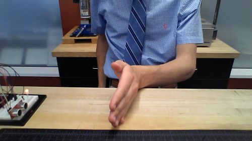 Image 7: A circuit whose LED changes color depending on the distance between an object and its distance sensor.
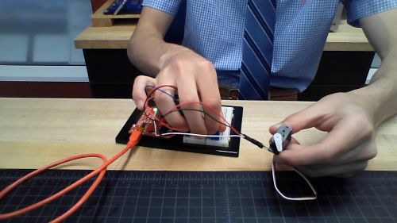 Image 8: A circuit whose motor turns depending on the turning of the dial.
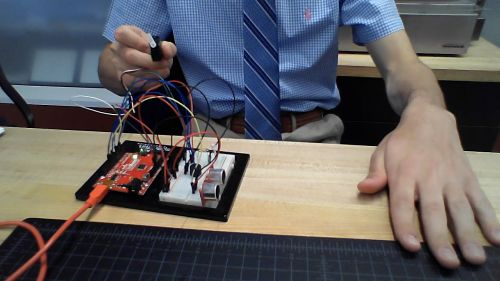 Image 9: A circuit whose motor turns depending on the distance between an object and its distance sensor.
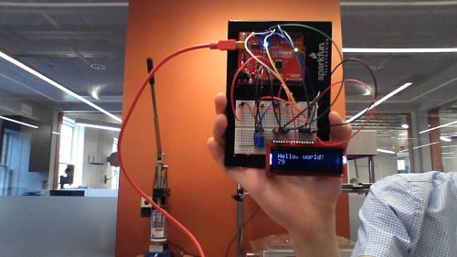 Image 10: A circuit whose screen displays a certain message.
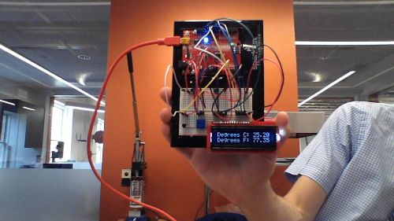 Image 11: A circuit whose screen displays the temperature of the temperature sensor.
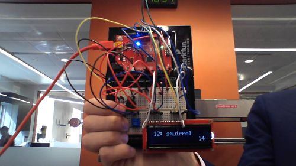 Image 12: A circuit that lets you play a game of guessing the specific animal.
Back to index